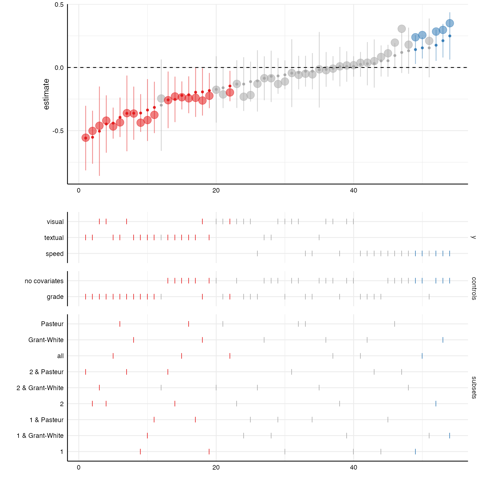

vignettes/measurement-models.Rmd
measurement-models.RmdSometimes, we may want to estimate relationships between latent
variables and we are interested in the effect of different measurement
models on the relationship of interest. Because specifically customized
model-functions can be passed to run_specs() many different
model types (including structural equation models, multilevel models…)
can be estimated. This vignette exemplifies how to integrate latent
measurement models and estimate structural equations models (SEM).
For this example, we will us the HolzingerSwineford1939
data set that is included in the lavaan-package. We quickly
dummy-code the sex variable as we want to include it as a control.
# Load data and recode
d <- HolzingerSwineford1939 %>%
mutate(sex = as.character(sex),
school = as.character(school)) %>%
as_tibble
# Check data
head(d)
#> # A tibble: 6 × 15
#> id sex ageyr agemo school grade x1 x2 x3 x4 x5 x6 x7
#> <int> <chr> <int> <int> <chr> <int> <dbl> <dbl> <dbl> <dbl> <dbl> <dbl> <dbl>
#> 1 1 1 13 1 Paste… 7 3.33 7.75 0.375 2.33 5.75 1.29 3.39
#> 2 2 2 13 7 Paste… 7 5.33 5.25 2.12 1.67 3 1.29 3.78
#> 3 3 2 13 1 Paste… 7 4.5 5.25 1.88 1 1.75 0.429 3.26
#> 4 4 1 13 2 Paste… 7 5.33 7.75 3 2.67 4.5 2.43 3
#> 5 5 2 12 2 Paste… 7 4.83 4.75 0.875 2.67 4 2.57 3.70
#> 6 6 2 14 1 Paste… 7 5.33 5 2.25 1 3 0.857 4.35
#> # … with 2 more variables: x8 <dbl>, x9 <dbl>Let’s quickly run a simple structural equation model with lavaan.
Note that there are separate regression formulas for the measurement
models and the actual regression models in the string that represents
the model. The regression formulas follows a similar pattern as formulas
in linear models (e.g., using lm() or glm())
or multilevel models (e.g., using lme4::lmer()). This
regression formula will automatically be built by the function
setup(). The formulas denoting the measurement model (in
this case only one), however, we need to actively paste into the formula
string.
lavaan syntax and output
# Model syntax
model <- "
# measures
visual =~ x1 + x2 + x3
# regressions
visual ~ ageyr + grade
"
fit <- sem(model, d)
broom::tidy(fit)
#> # A tibble: 12 × 9
#> term op estimate std.error statistic p.value std.lv std.all std.nox
#> <chr> <chr> <dbl> <dbl> <dbl> <dbl> <dbl> <dbl> <dbl>
#> 1 visual =… =~ 1 0 NA NA 0.782 0.670 0.670
#> 2 visual =… =~ 0.732 0.130 5.62 1.96e- 8 0.572 0.486 0.486
#> 3 visual =… =~ 0.947 0.163 5.82 5.77e- 9 0.740 0.656 0.656
#> 4 visual ~… ~ -0.147 0.0614 -2.39 1.68e- 2 -0.188 -0.197 -0.188
#> 5 visual ~… ~ 0.539 0.135 4.00 6.36e- 5 0.690 0.345 0.690
#> 6 x1 ~~ x1 ~~ 0.751 0.116 6.46 1.06e-10 0.751 0.551 0.551
#> 7 x2 ~~ x2 ~~ 1.06 0.104 10.2 0 1.06 0.764 0.764
#> 8 x3 ~~ x3 ~~ 0.727 0.107 6.80 1.02e-11 0.727 0.570 0.570
#> 9 visual ~… ~~ 0.557 0.125 4.44 8.96e- 6 0.912 0.912 0.912
#> 10 ageyr ~~… ~~ 1.10 0 NA NA 1.10 1 1.10
#> 11 ageyr ~~… ~~ 0.268 0 NA NA 0.268 0.511 0.268
#> 12 grade ~~… ~~ 0.249 0 NA NA 0.249 1 0.249Whenever we want to include more complex models in “specr”, it makes
sense to check what output the broom::tidy() function
produces. Here, we can see that the variable term does not
only include the predictor (as it usually does with models such as “lm”
or “glm”), but it includes the entire paths within the model. If we do
not specify different types of model, this will not be a problem, but we
we do (e.g., “sem” and “lm”), we need to adjust the paremeter extract
function.
In a first step, we thus need to create a specific function that
defines the latent measurement models for the latent measures specified
as x and y in setup() and
incoporate them into a formula that follows the lavaan-syntax. The
function needs to have two arguments: a) formula and b) data. The exact
function now depends on the purpose and goals of the particular
question.
In this case, we want to include three different latent measurement models for dependent variables. First, we have to define a a named list with these measurement models. This is important as the function makes use of the “names”.
In a second step, we need to exclude the “+ 1” placeholder the specr
automatically adds to each formula if no covariates are included (in
contrast to lm() or lme4::lmer(),
lavaan::sem() does not support such a placeholder). Third,
we need to make sure that only those measurement models are integrated
which are actually used in the regression formula (it does not matter
whether these are independent or control variables). Fourth, we need to
paste the remaining measurement models into the formula. Finally, we run
the structural equation model (here, additional arguments such as
estimator could be used).
sem_custom <- function(formula, data) {
require(lavaan)
# 1) Define latent variables as a named list
latent <- list(visual = "visual =~ x1 + x2 + x3",
textual = "textual =~ x4 + x5 + x6",
speed = "speed =~ x7 + x8 + x9")
# 2) Remove placeholder for no covariates (lavaan does not like "+ 1")
formula <- str_remove_all(formula, "\\+ 1")
# 3) Check which of the additional measurement models are actually used in the formula
valid <- purrr::keep(names(latent),
~ stringr::str_detect(formula, .x))
# 4) Include measurement models in the formula using lavaan syntax
formula <- paste(formula, "\n",
paste(latent[valid],
collapse = " \n "))
# 5) Run SEM with sem function
sem(formula, data)
}
# In short:
sem_custom <- function(formula, data) {
require(lavaan)
latent <- list(visual = "visual =~ x1 + x2 + x3",
textual = "textual =~ x4 + x5 + x6",
speed = "speed =~ x7 + x8 + x9")
formula <- stringr::str_remove_all(formula, "\\+ 1")
valid <- purrr::keep(names(latent), ~ stringr::str_detect(formula, .x))
formula <- paste(formula, "\n", paste(latent[valid], collapse = " \n "))
sem(formula, data)
}Now we use setup() like we are used to. We only include
the new function as model parameter and use the latent variables (see
named list in the custom function) as depended variables. Warning
messages may appear if models do not converge or have other issues.
# Setup specs
specs <- setup(data = d,
y = c("textual", "visual", "speed"),
x = c("ageyr"),
model = c("sem_custom"),
controls = c("grade"),
distinct(d, sex),
distinct(d, school))
# Summarize specifications
summary(specs, row = 10)
#> Setup for the Specification Curve Analysis
#> -------------------------------------------
#> Class: specr.setup -- version: 1.0.0
#> Number of specifications: 54
#>
#> Specifications:
#>
#> Independent variable: ageyr
#> Dependent variable: textual, visual, speed
#> Models: sem_custom
#> Covariates: no covariates, grade
#> Subsets analyses: 1 & Pasteur, 2 & Pasteur, Pasteur, 1 & Grant-White, 2 & Grant-White, Grant-White, 1, 2, all
#>
#> Function used to extract parameters:
#>
#> function (x)
#> broom::tidy(x, conf.int = TRUE)
#> <environment: 0x7fe3fcd78900>
#>
#>
#> Head of specifications table (first 10 rows):
#> # A tibble: 10 × 8
#> x y model controls subsets sex school formula
#> <chr> <chr> <chr> <chr> <chr> <fct> <fct> <glue>
#> 1 ageyr textual sem_custom no covariates 1 & Pasteur 1 Pasteur textua…
#> 2 ageyr textual sem_custom no covariates 2 & Pasteur 2 Pasteur textua…
#> 3 ageyr textual sem_custom no covariates Pasteur NA Pasteur textua…
#> 4 ageyr textual sem_custom no covariates 1 & Grant-White 1 Grant-W… textua…
#> 5 ageyr textual sem_custom no covariates 2 & Grant-White 2 Grant-W… textua…
#> 6 ageyr textual sem_custom no covariates Grant-White NA Grant-W… textua…
#> 7 ageyr textual sem_custom no covariates 1 1 NA textua…
#> 8 ageyr textual sem_custom no covariates 2 2 NA textua…
#> 9 ageyr textual sem_custom no covariates all NA NA textua…
#> 10 ageyr textual sem_custom grade 1 & Pasteur 1 Pasteur textua…Within the specification table, we don’t really see much difference compared to standard models such as e.g., “lm”. However, in the formula, variables refer to latent variables as specified in the custom function.
If we know pass it to specr(), actual structural
equation models will be fitted in the background.

Because the broom::tidy() functions also extracts
standardized coefficients, we can plot them on top of the unstandarized
coefficients with a little bit of extra code.
# Create curve with standardized coefficients
plot_a <- plot(results, "curve") +
geom_point(aes(y = std.all, alpha = .1, size = 1.25)) +
geom_hline(yintercept = 0, linetype = "dashed")
# Choice panel
plot_b <- plot(results, "choices",
choices = c("y", "controls", "subsets"))
# Combine plots
plot_grid(plot_a, plot_b,
ncol = 1,
align = "v",
axis = "rbl",
rel_heights = c(1.5, 2)) 
Some fit indices are already included in the result data frame by default. With a few code lines, we can plot the distribution of these fit indices across all specifications.
# Looking at included fit indices
results %>%
as_tibble %>%
select(x, y, model, controls, subsets,
fit_cfi, fit_tli, fit_rmsea) %>%
head
#> # A tibble: 6 × 8
#> x y model controls subsets fit_cfi fit_tli fit_rmsea
#> <chr> <chr> <chr> <chr> <chr> <dbl> <dbl> <dbl>
#> 1 ageyr textual sem_custom no covariates 1 & Pasteur 0.991 0.974 0.0834
#> 2 ageyr textual sem_custom no covariates 2 & Pasteur 1 1.02 0
#> 3 ageyr textual sem_custom no covariates Pasteur 1 1.01 0
#> 4 ageyr textual sem_custom no covariates 1 & Grant-Wh… 0.975 0.926 0.132
#> 5 ageyr textual sem_custom no covariates 2 & Grant-Wh… 0.949 0.847 0.209
#> 6 ageyr textual sem_custom no covariates Grant-White 1 1.02 0
# Create curve plot
p1 <- plot(results, "curve", var = fit_cfi, ci = FALSE) +
geom_line(aes(x = specifications, y = fit_cfi), color = "grey") +
geom_point(size = 2, shape = 18) + # increasing size of points
geom_line(aes(x = specifications, y = fit_rmsea), color = "grey") +
geom_point(aes(x = specifications, y = fit_rmsea), shape = 20, size = 2) +
ylim(0, 1) +
labs(y = "cfi & rmsea")
# Create choice panel with chisq arrangement
p2 <- plot(results, "choices", var = fit_cfi,
choices = c("y", "controls", "subsets"))
# Bind together
plot_grid(p1, p2,
ncol = 1,
align = "v",
axis = "rbl",
rel_heights = c(1.5, 2))